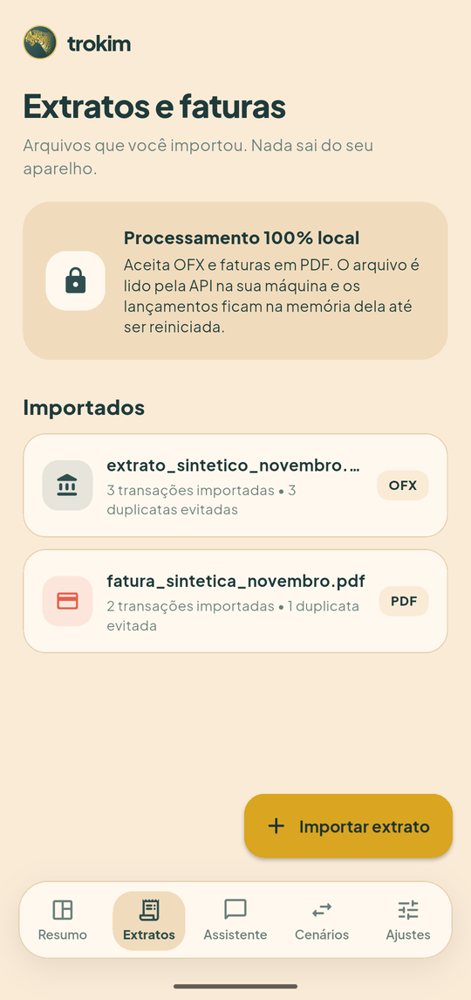

Guia de Uso e Primeiros Passos¶
Instruções para configurar, executar e testar o ambiente de desenvolvimento completo do Trokim.
1. Pré-Requisitos¶
- Python 3.12+ e gerenciador ultra-rápido uv instalado.
- Flutter SDK 3.50.0 (a mesma versão do CI), JDK 17 e Android SDK 36 para desenvolvimento Android.
- Navegador moderno ou cliente HTTP (como curl, Insomnia ou Postman).
2. Configuração do Backend e Dependências¶
Clone o repositório e execute a automação inicial:
# Sincroniza dependências com uv e prepara o ambiente virtual
make setup
# Executa a bateria de testes automatizados (87 da API e 67 de pesquisa)
make test
# Lint (ruff) e build estrito da documentação
make lint
make docs-build
# Inicia a API FastAPI localmente na porta 8000
make api-run
A API estará disponível em:
- Endpoints e Swagger interativo: http://127.0.0.1:8000/docs
- Health check: http://127.0.0.1:8000/v1/health
- Consulta RAG Extrativa: POST http://127.0.0.1:8000/v1/chat/ask
- Síntese Generativa Contextualizada: POST http://127.0.0.1:8000/v1/chat/generate
3. Síntese Generativa Local (LiteLLM e Ollama)¶
A camada generativa usa a porta LLMProvider (ADR 0009). O provedor padrão é o LiteLLM, que aceita qualquer modelo definido por configuração. Com um modelo local no Ollama, nenhum dado sai da sua máquina.
Configuração do modelo local¶
# Instala o Ollama (https://ollama.com), sobe o servidor e baixa um modelo leve
ollama serve
ollama pull qwen2.5:1.5b
# A API lê api/.env (copie de api/.env.example)
cp api/.env.example api/.env
Variável (api/.env) |
Função | Padrão |
|---|---|---|
LLM_PROVIDER |
litellm (padrão), ollama (cliente direto) ou mock (testes e CI) |
litellm |
LLM_MODEL |
Modelo no formato do LiteLLM, por exemplo ollama/qwen2.5:1.5b |
ollama/qwen2.5 |
LLM_API_BASE |
Endereço do servidor do modelo (vazio usa o Ollama local, http://localhost:11434) |
vazio |
LLM_API_KEY |
Só para modelos de nuvem (uma escolha explícita, fora da premissa local-first) | vazio |
LLM_TIMEOUT |
Tempo limite da geração, em segundos | 120 |
LLM_THINKING |
Raciocínio estendido de modelos que o suportam (desligado: evita respostas vazias) | false |
LLM_TITLE_TIMEOUT |
Tempo limite do título da conversa, em segundos | 25 |
LLM_TITLE_MODEL |
Modelo leve só para dar título às conversas (vazio usa LLM_MODEL) |
ollama/qwen2.5:1.5b |
Um modelo grande rodando na CPU leva dezenas de segundos por resposta (o gemma4:26b levou cerca de 50 s); para o dia a dia, prefira um modelo menor. Em ambientes sem modelo, use LLM_PROVIDER=mock.
Exemplos de requisições HTTP¶
Modo Grounded (fundamentado no RAG, com abstenção ativa):¶
curl -X POST http://127.0.0.1:8000/v1/chat/generate \
-H "Content-Type: application/json" \
-d '{"message": "Como funciona o rotativo do cartao de credito?", "mode": "grounded"}'
Modo Pure (base de comparação, sem RAG):¶
curl -X POST http://127.0.0.1:8000/v1/chat/generate \
-H "Content-Type: application/json" \
-d '{"message": "Como funciona o rotativo do cartao de credito?", "mode": "pure"}'
Modo Naive (base de comparação, RAG ingênuo sem política de abstenção):¶
curl -X POST http://127.0.0.1:8000/v1/chat/generate \
-H "Content-Type: application/json" \
-d '{"message": "Como funciona o rotativo do cartao de credito?", "mode": "naive"}'
Título de uma conversa:¶
curl -X POST http://127.0.0.1:8000/v1/chat/title \
-H "Content-Type: application/json" \
-d '{"message": "Como montar uma reserva de emergencia?"}'
Se o modelo estiver indisponível, /v1/chat/generate devolve 503 com uma mensagem clara e /v1/chat/title devolve as primeiras palavras da pergunta (source = "fallback"). No app, o interruptor Respostas com IA (em Ajustes) alterna entre /v1/chat/generate e a busca extrativa /v1/chat/ask.
Benchmark comparativo e gráficos¶
make comparison-validate # valida gabarito, prompts e fontes (sem chamar o modelo)
make comparison-run RUN=2026-11-20-qwen2.5-1.5b MODEL=ollama/qwen2.5:1.5b # registra uma execução versionada
make report-charts # regenera os gráficos do MkDocs
O passo a passo para registrar uma execução está em Histórico de Resultados.
3.1. Aplicativo Mobile no Emulador¶
Para rodar o app Android (Flutter) com o backend local:
# Terminal 1: backend (a partir da raiz do repositório)
DEBUG=false ENVIRONMENT=development make api-run
# Terminal 2: app (requer Flutter estável, JDK 17 e Android SDK 36)
cd mobile
flutter pub get
flutter test # 123 testes
flutter run # emulador Android; a API fica em http://10.0.2.2:8000/v1
No app, a aba Ajustes permite escolher o tema (por padrão segue o claro/escuro do aparelho), reduzir animações, desligar a abertura animada e testar a conexão com a API. Para apontar para outro endereço, use --dart-define=API_BASE_URL=http://<ip>:8000/v1.
4. Apresentação Executiva e Demonstração¶
O painel de resultados e as perguntas de demonstração validadas pelo benchmark estão em Apresentação Executiva.
5. Testes e Avaliação do Motor RAG (Benchmark)¶
Para rodar a suíte de avaliação empírica contra o gabarito oficial de 61 consultas:
# Executa a bateria completa de testes de research e benchmark
make test
# Ou execute diretamente a avaliação com métricas detalhadas:
cd research/rag_benchmark
uv run python eval_rag.py
O script reporta Recall@3, precisão de recuperação fundamentada e taxa de abstenção.
6. Geração de Dados Sintéticos (LGPD)¶
Para gerar novos extratos bancários .ofx e faturas .pdf sintéticas e reproduzíveis:
Os arquivos serão criados em research/synthetic_data/, garantindo 100% de privacidade sem dados financeiros reais.
7. Documentação Viva com Zensical¶
Para compilar e servir localmente o site de documentação:
Acesse no navegador: http://127.0.0.1:8000 (ou porta alternativa exibida no terminal).
8. Execução do Aplicativo Mobile (Flutter)¶
Com um emulador Android ou dispositivo físico conectado:
8.1. Importar extratos e ver o resumo¶
Com a API no ar (make api-run), abra a aba Extratos, toque em Importar extrato e escolha
um arquivo .ofx ou .pdf (os de teste estão em research/synthetic_data/; no emulador, copie o
arquivo para a pasta Downloads com adb push). O app envia o arquivo à API local, que lê os
lançamentos, marca as duplicatas e calcula os totais. A aba Resumo mostra só o que a API
calculou.
| Resumo | Extratos |
|---|---|
 |
Para usar a API em outro endereço (por exemplo, um aparelho físico na mesma rede), edite o endereço da API em Ajustes e toque em Salvar endereço; Testar conexão confere se ela responde. Os lançamentos ficam na memória da API e somem quando ela é reiniciada.